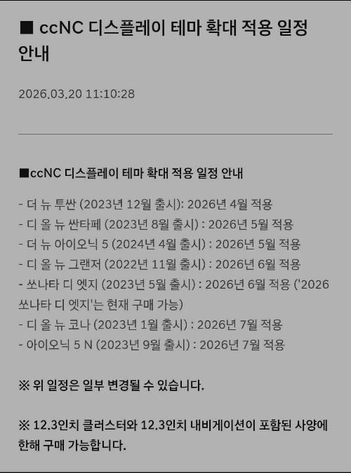
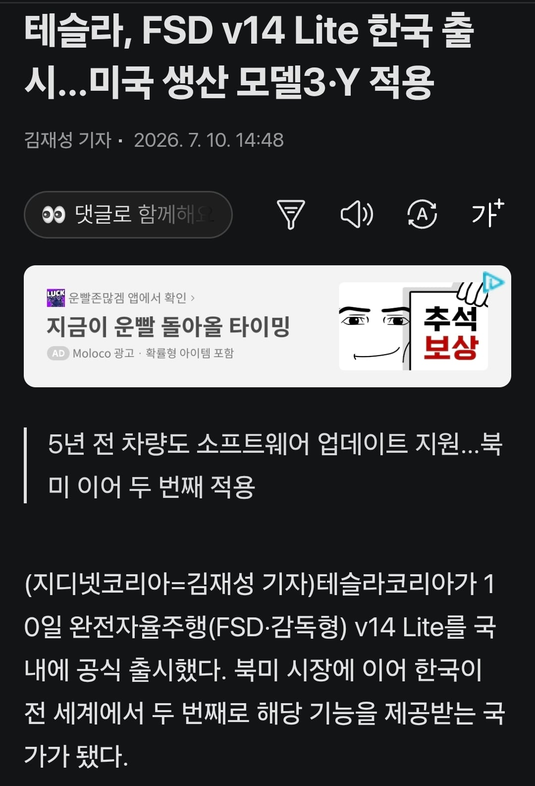

21년식 아이오닉 : 피카츄테마 업데이트도 안됨
21년식 모델 Y : fsd lite 적용됨
26년식 아이오닉 과 26년식 모델 Y의 5년후를 생각하면...
그때는 중국산 썩차들도 자율주행달고 다닐건데


21년식 아이오닉 : 피카츄테마 업데이트도 안됨
21년식 모델 Y : fsd lite 적용됨
26년식 아이오닉 과 26년식 모델 Y의 5년후를 생각하면...
그때는 중국산 썩차들도 자율주행달고 다닐건데
누군가 현기의 미래를 묻거든 고개를 들어 소니를 보게 하라
애플도 그렇고 테슬라도 그렇고
사후지원은 해외쪽이 더 좋은갑네...
차살때 냉정하게 신기술 달린건 뽐내고 싶은거지
현실적으로는 유지보수 편한게 최우선임
국내에서 수리 하루 넘어가는 제조사꺼 못 타겠다
현기 소프트웨어는 병신임 5w CCNC 죄다 만들다 말고 글레오 Ai 쳐내놧는데 사실상 CCNC 랑 거의 비슷함 그랜져 아반떼 탑재 된거 보니까 기능 ㅈ도 없음 이것 또한 아트리아 대강 완성 하면 버려질 예정 말로는 뭐 글레오랑 아트리아 같이 간다는 소리있던데 응 ㅋㅋㅋㅋㅋㅋ 현대 말을 믿음? 현대 자율주행할려면 10~15년 데이터 모아서 지금 테슬라 FSD Lite 만큼 할듯
테슬라랑 현대 인포테인먼트 OS 보면 iOS랑 옴니아 같아.
그래도 테슬라 안살거 같다. 지인 테슬라 AS 썰이랑 얻어 탔을때 승차감 ㅈ구린걸 경험하니까 이걸 이돈주고 왜사는지 이해안가더라. 그래서 다음엔 그사람 제네시스 살거라고
제네시스랑 테슬라랑 가격차이 몇천만원이야.. 같은급으로 비교하려면 소렌토 이런거랑해야지
테슬라 yl 타고 있음
승차감 구림 싼타페가 나음. 저속 노면 소음큼
직빨 좋음 고속 풍절음 낮음
저속노면소음이면 타이어만 좋은거 하면 괜찮은거 아냐?
풍절음 잘 안들린다니 놀랍네
풍절음 비교군이 싼타페 이상의 큰 suv임. 세단이나 쿠페형suv등의 좋은 차들은 안타봐서 모름
그리고 저속 노면 소음이 기본으로 있어서 고속으로 가도 안커지네? 그런 느낌? 상태 좋은 아스팔트에서는 소음 작음 (개인적 느낌)
어허! 중국차를 옹호하다니! 돈 받은게 분명하다!
내가 스팅어 5W쓰다가 학을떼고 이번에 그래 한번 써보기나 하자하고 테슬라 계약함 진짜 소프트웨어버리는거 너무할지경임
굼뜬네비 좀 쓸만하게 해줄려면 무선 카플레이라도 풀어주지
5W에서 유선 카플레이라도 HUD 연동만 됐어도 이렇게 욕하진 않을텐데 5W에서 기능 업데이트란걸 받은적이 없어. OTA는 지도뿐
응 전고체사면 그만이야~
기아도 포켓몬 해줘.... 같은 집이잖아.... 기아도 제발....ㅠㅠ
5년뒤면 FSD 월 정액제 20~30만원에 옵션 주렁주렁 달고 있을거 같은데
다른데 다 하는데 현기는 안할까? ㅋㅋㅋ
현기도 테슬라처럼 초반에 무료로 풀거나 한정된 자율주행 풀겠지
근데 또 모르는게 중국애들은 자율주행값을 안받고 있어서 증국애들하고 경쟁하려면 테슬라도 마냥 배짱은 못부림
이미 테슬라 구독제로 운영중임 7.5~15로 운영하고 있고 나중에 가면 더 비싼 가격으로 하겠지 중국애들도 지금 보조금 많이 받으니깐 그렇지 해외나가서 자리 잡는 순간 가격 인상은 불가피함
쓴이가 말하고 싶은건 이거야
지금 당장 현대 라인업의 차를 사고 5년뒤에 그 차가 기술적 지원 만으로 소프트웨어만으로
자율주행이 오픈될만한 준비를 해놨는가?
현대는 대체 무슨 준비와 빌드업을 깔아놓고 미래를 준비하고 있는가
그건 지금 출시하려는 차를 보면 됨
그에 반해 다른 기업들은 5년전에 차를 산 차종으로 자율주행이 가능하다
sdv 자체가 격차가 어느정도 나야 이런게 가능할까
현대가 그냥 한심하기만함 ㄹㅇ
꿈보다 해몽이구나!
쓴이 : 내가 그랬다고?
21년식 아이오닉은 구형 ccNC도 아니고 표준형 5W라고 구형의 구형 인포테인먼트라 기능 업데이트란걸 받아본 적이 없네.
엔비디아에서 천재 한명 영입해왔다카더만
2,3년후에는 뭔가 나오지않을까
차이가 있다면 업뎃으로 가능과
차를 새로 사야하는 차이는 있지
뭔가 나온다 한들 지금사는 현기차는 업뎃도 안되는 수동차인거지
5W, ccNC 둘 다 당해보고 테슬라로 넘어감
걍 다른 세계임 ㅋㅋㅋ
난 다음 차는 무조건 테슬라야
테슬라 좋지
아이오닉도 좋음
현대차가 당시에 돈좀 벌겠다고 sw쪽만 분할상장해서 오토에버를 만들어버리니깐
다같이 직진이 안됨
테슬라 차주 분들은 제발 fsd만 키고 다녀주세요
fsd가 안됨... 운전하기 싫어서 차산 새끼들이라 그런가 운전을 주로 x같이함
진쩌 아이폰 10년넘어도 ios 다 업뎃되고 최신기능 다 이용하는데 삼성 스마트티비 신혼때 산거 몇년지나고 쿠팡어플나왓는데 안깔림 ㅋㅋ 업뎃안됨
넷플 디즈니까진 보는데 쿠팡 애플티비 티빙 못봄.
그거 어플 몇메가라고 그거하나 못돌리냐
21년식 테슬라? 그거 타도되는거 맞냐?
요즘 오히려 중고가 올라감.
21년식 bms 터질건 다 터지고 이제 강한놈들만 남았다 이건가?
보증도 오히려 늘어났고 재수좋아서 중고베터리 재고 없으면 새베터리로 해주기도 함. 요즘은 오히려 bms 터지라고 기도메타임
21년식에 26년도에 라이트 업데이트 해줬다고 테슬라 찬양하는거 웃기네
오히려 테슬라가 욕을 먹어야 하는 상황인데
물론 그동안 fsd스캠사기한걸론 욕을 먹어야 하지만 5년전 자동차를 업데이트로 기능을 추가가능한 sdv로써의 완성도는 대단하거지
21년식 테슬라? 시발ㅋㅋㅋ타본놈들 알지? 달구지 승차감인거
달구진데 자율주행되는 달구지
나중에 현기에서 자율주행 나온다고 하더라도 지금 차들은 못하잖아 ㅋㅋ 테슬라는 풀어주기만 하면 전부 fsd 되는데